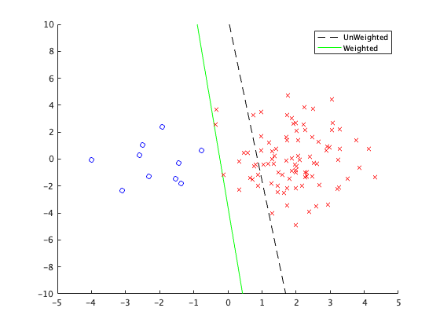

clear all; rand('state',0); randn('state',0);
x=[[randn(90,1)-2; randn(10,1)+2] 2*randn(100,1)];
y=[ones(90,1); 2*ones(10,1)];
X=[[randn(10,1)-2; randn(90,1)+2] 2*randn(100,1)];
[t,t_alter]=CWLS(x,y,X);
Y=[ones(10,1); (-1)*ones(90,1)];
figure(1); clf; hold on
plot([-5 5],-(t(3)+[-5 5]*t(1))/t(2),'k--');
plot([-5 5],-(t_alter(3)+[-5 5]*t_alter(1))/t_alter(2),'g-');
plot(X(Y==1,1),X(Y==1,2),'bo');
plot(X(Y==-1,1),X(Y==-1,2),'rx');
legend('UnWeighted','Weighted');
axis([-5 5 -10 10])
function [t,t_alter]=CWLS(x,y,X)
x(:,3)=1; n=length(y);
X(:,3)=1; N=length(X);
x2=sum(x.^2, 2); X2=sum(X.^2, 2);
xx=sqrt(repmat(x2,1,n)+repmat(x2',n,1)-2*x*x');
xX=sqrt(repmat(x2,1,N)+repmat(X2',n,1)-2*x*X');
for i=1:2
s(i)=sum(y==i)/n; b(i)=mean(mean(xX(y==i,:)));
for j=1:2
A(i,j)=mean(mean(xx(y==i,y==j)));
end
end
v=(A(1,2)-A(2,2)-b(1)+b(2))/(2*A(1,2)-A(1,1)-A(2,2));
v=min(1,max(0,v)); v(2)=1-v;
w=v(y)./s(y);
z=2*y-3;
t=x\z;
t_alter=(x'*(repmat(w',1,size(x,2)).*x))\(x'*(w'.*z));
end
